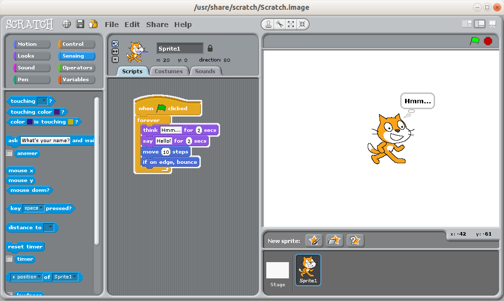
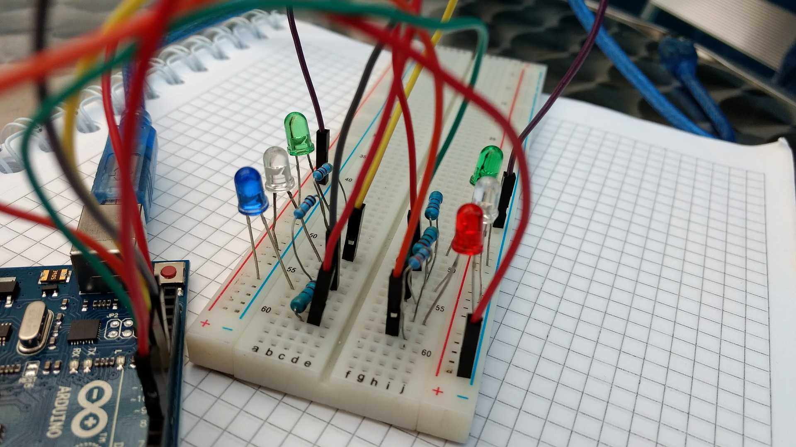
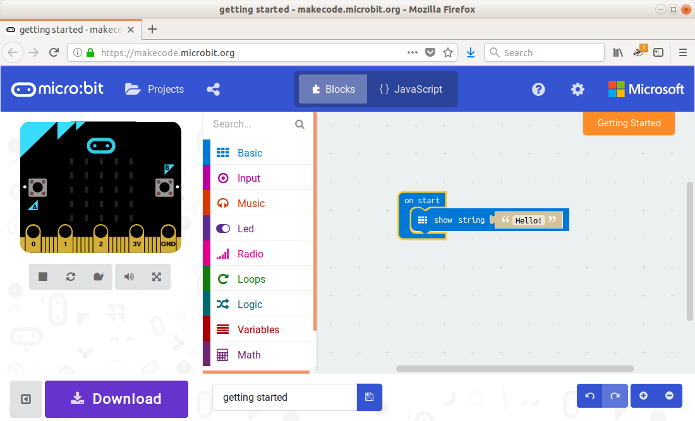

BBC micro:bit - einfach und hands-on
Christian Egli
2018-04-27
Table of Contents
Background
Motivation
- Better to play in the forest
- Games are here
- Show what is behind them
Requirements
- simple
- engaging
- physical
Landscape
Scratch

Scratch
- http://scratch.mit.edu
- Lego-like programming
- designed for education
- Teaching resources
Verdict
- Perfect for making simple games
- No interaction with the real world
Arduino

Arduino
- https://www.arduino.cc/
- open-source electronics platform
- aimed at students
- with no background in electronics and programming
- fairly simple
- for simple things
- program in C++
Arduino Coding
// Pin 13 has an LED connected on most Arduino boards.
int led = 13;
// the setup routine runs once when you press reset:
void setup() {
// initialize the digital pin as an output.
pinMode(led, OUTPUT);
}
// the loop routine runs over and over again forever:
void loop() {
digitalWrite(led, HIGH); // turn the LED on
delay(1000); // wait for a second
digitalWrite(led, LOW); // turn the LED off
delay(1000); // wait for a second
}
Verdict
- Plenty of physical interaction
- too advanced
A combination?
- Ease of programming
- Physical real world interaction
micro:bit
- Programming very similar to Scratch
- Interact with the world
- Sensors
- LED, Motors
History
- Developed by BBC
- encourage children
- to get involved in writing software for computers
- rather than being consumers of media
- given for free to each grade 7 kid (11-12 years)
Front

Back

Interact with the world
- LEDs
- Buttons
- Sensors
- Light
- Temperature
- Motion (accelerometer and compass)
- Wireless Communication
- via Radio and Bluetooth
- Physical connection pins
- USB interface
Coding

Coding
- In-Browser Editor
- Simulator
- Download
Resources
Where to get it
Similar efforts
Calliope

Calliope
- German version of the micro:bit
- aimed at schools
- not as well known
Calliope vs micro:bit
- Calliope has more Accentuators
- Speakers
- Motors without an extra board
- In German
- fewer resources (?)
- 50.- vs 20.-
Chibitronics

Chibitronics
- programming with arts and crafts
- tools for paper circuits
GoPiGo

GoPiGo
- Robotics kit from Dexter Industries
- Based on Blockly (Scratch-like)
- SparkFun micro:bot kit
Workshop
| ITEM | Time |
|---|---|
| Workshop | 2:35 |
| Hello World | 0:15 |
| Rock Paper Scissors | 0:30 |
| Stop watch | 0:30 |
| Avalanche transceiver | 0:30 |
| Banana keyboard | 0:20 |
| Fireflies | 0:30 |
Hello World
- Warm-up exercise
- use editor
- download
- 15 mins
- http://microbit.org/guide/quick/
- http://microbit.org/ideas/
Rock Paper Scissors
- Basic game
- variable, random, if then else
- 30 mins
- http://microbit.org/en/2017-03-07-rock-paper-scissors/
- https://makecode.microbit.org/projects/rock-paper-scissors
Stop watch
- Basic stop watch with random animations
- variable, random, if then else, time, strings
- 30 mins
- https://makecode.microbit.org/examples/stop-watch
Avalanche transceiver
- Communicate between micro:bits
- radio transmission
- work in teams
- 30 mins
- https://makecode.microbit.org/projects/hot-or-cold
Banana keyboard
- Basic input and sound
- read input pins, generate sound
- Material
- cables, crocodile clips, fruit, speaker
- 20 mins
- https://makecode.microbit.org/projects/banana-keyboard
Fireflies
- Communicate between micro:bits
- swarm behavior
- advanced concept
- 30 mins
- https://makecode.microbit.org/projects/fireflies
License

Except where otherwise noted, this work is licensed under Creative Commons Attribution-ShareAlike 4.0 International License
Source
The source of this presentation is available at https://github.com/egli/microbit-workshop